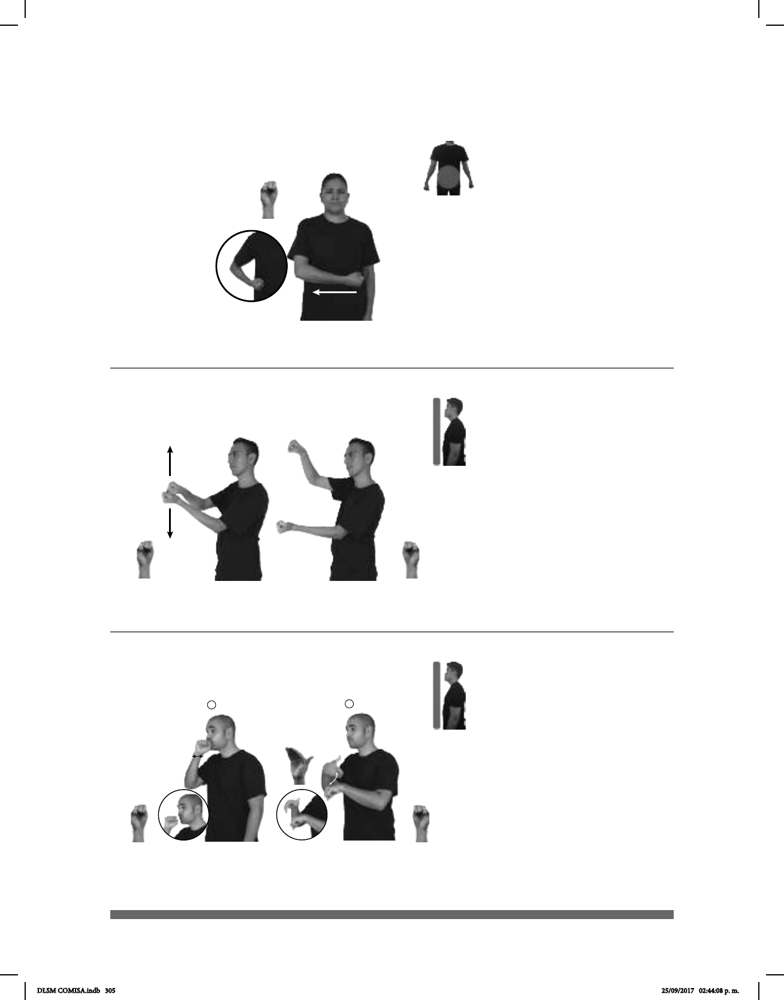

305
1
2
Seña: SS
S.1
Las palmas se encuentran
frente a frente.
A la altura del pecho.
Las manos parten de un
mismo punto y luego se abren hacia arriba
y hacia abajo.
Simula a una persona
abriendo el pergamino de la Constitución.
sust. f. Conjunto de normas y
leyes que fundamenta la organización de
un Estado por el que se rigen los
gobernantes y los ciudadanos.
Seña: SC: I. SM; II. SB
I. S.1; II. MD B-P.7, MB
S.1
II. Palma hacia la izquierda; II.
MD la palma inicia hacia dentro y
termina hacia abajo. MB palma hacia
abajo.
I. Sobre la boca; II. A la
altura del pecho. MD sobre MB.
I. La mano simula varios
saltos; II. La MD se mueve de atrás hacia
II. Labios soplan-
do.
sust. f. Conjunto de letras o
números que permite el acceso restringido
a un servicio.
(S-35)
(S-36)
MAÑANA ESCUELA CONSTITUCIÓN pro-YO CONFERENCIA
Mañana expondré en la escuela sobre la Constitución.
pro-YO OLVIDAR CONTRASEÑA
Olvidé mi contraseña.
Seña: SM
S.1
Palma oblicua hacia
arriba y hacia dentro.
Sobre la cadera del
lado izquierdo al derecho.
Recto.
adj. Que se dice o se
conoce de manera reservada por
comunicación de una persona a otra
a quien se le pide no difundirlo.
(S-34)
AYER pro-DOS-DE-NOSOTROS ASUNTO CONFIDENCIAL PLATICAR
DLSM COMISA.indb 305 25/09/2017 02:44:08 p. m.